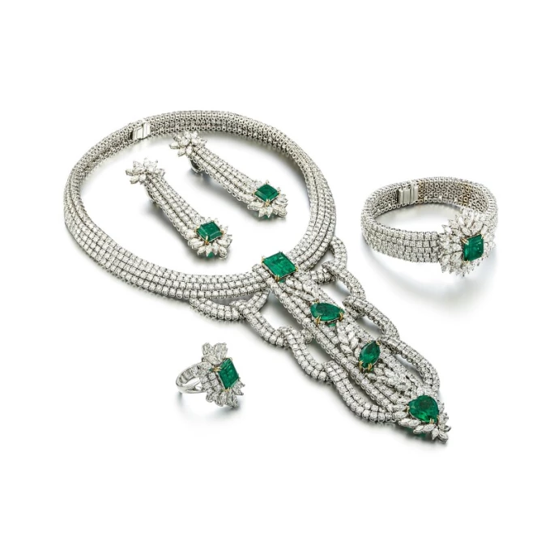
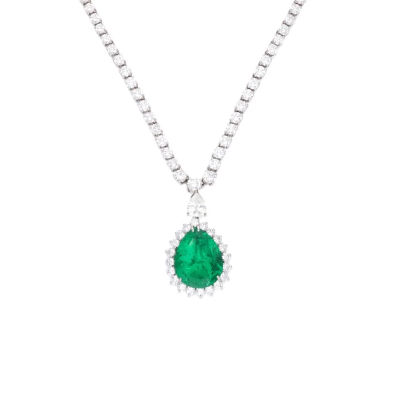
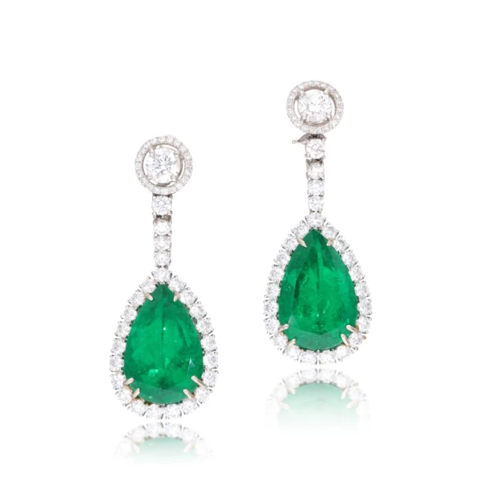
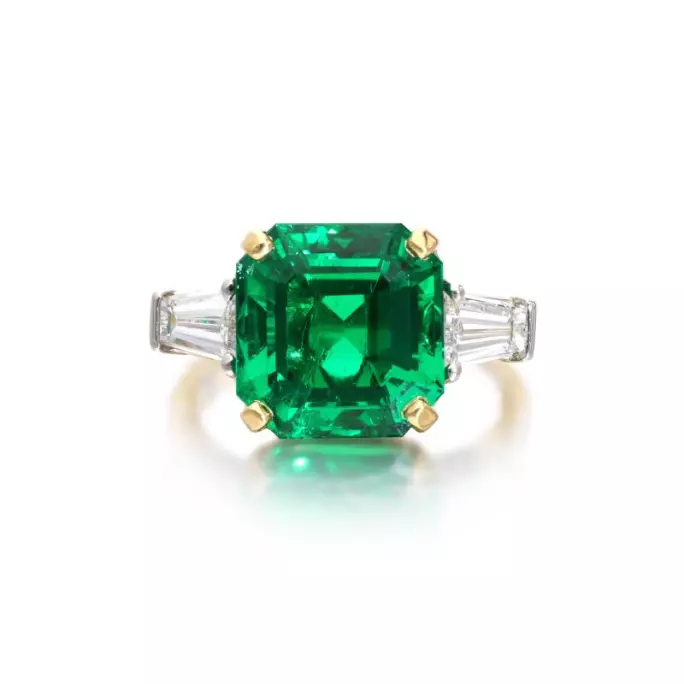
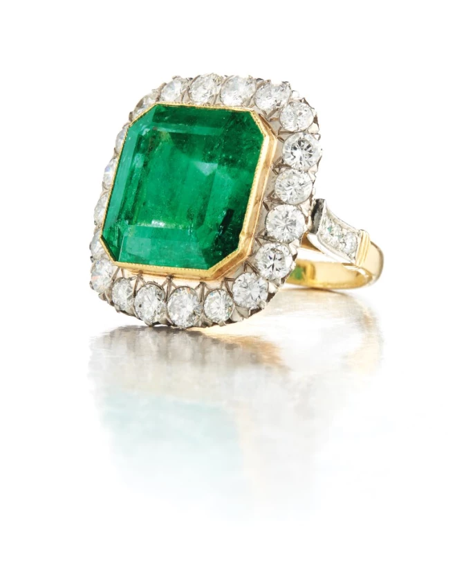
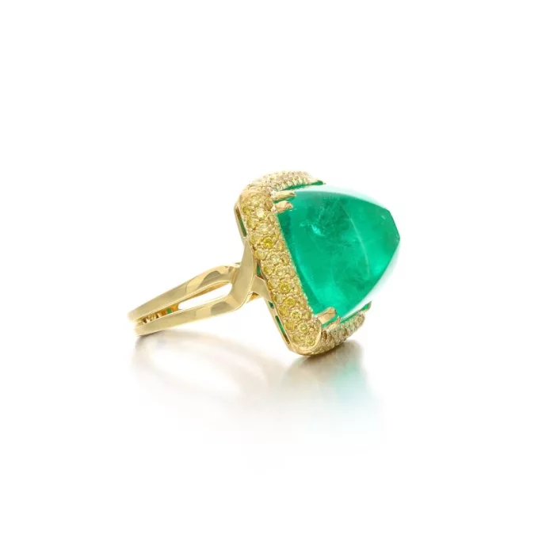
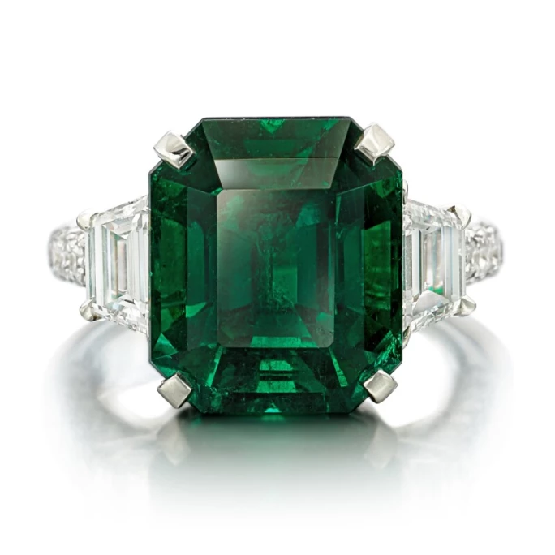

譯自 Lydia Dokko · Sotheby's
探索哥倫比亞祖母綠的輝煌歷史與非凡品質
哥倫比亞祖母綠的地質淵源
哥倫比亞祖母綠憑藉無與倫比的品質與醉人深綠色澤，贏得全球讚譽。哥倫比亞的祖母綠礦脈堪稱世上最富饒的珍寶寶庫。歷史地質資料顯示，早在 16 世紀西班牙征服者踏足這片土地之前，此地的祖母綠便已被發掘開採。印加文明曾在超過半個世紀的時光中，將這些翠綠瑰寶融入其珠寶藝術與神聖儀式。哥倫比亞祖母綠以獨有的深邃色調，令人心馳神往，價值連城，不論鑲嵌於項鍊、戒指、耳環或手鐲之上，皆散發著無可比擬的迷人魅力。

哥倫比亞祖母綠配鑽石套裝
傳奇的哥倫比亞祖母綠礦區

哥倫比亞祖母綠項鍊，18.72 克拉
哥倫比亞擁有穆索（Muzo）與奇沃爾（Chivor）兩大著名礦區。穆索礦區素有「世界祖母綠之都」美譽，出產的祖母綠以色澤最為濃郁深邃而聞名遐邇。奇沃爾礦區則以略帶藍調的綠色調寶石著稱。這兩大礦區至今仍在開採，為全球市場提供七至九成的祖母綠。哥倫比亞祖母綠令人驚嘆的翠綠光彩源於其中微量的鉻與釩元素。來自這些礦區中的最珍貴祖母綠，往往擁有極高淨度與極少可見內含物。
哥倫比亞祖母綠的神秘魅力

哥倫比亞祖母綠與鑽石垂墜耳環，39.90 克拉
長久以來，哥倫比亞祖母綠都籠罩著一層迷人的神秘色彩。在眾多文化中，祖母綠象徵豐饒與重生。根據古印加故事，祖母綠擁有神奇力量，能帶來好運、增強直覺、促進療癒與平衡。古時甚至有人相信祖母綠能治療霍亂和瘧疾等疾病。如今，祖母綠是 5 月的誕生石，也是傳統上 55 週年婚慶的珍貴禮物。
甄選天然哥倫比亞祖母綠

海瑞溫斯頓哥倫比亞祖母綠戒指，6.07 克拉
在奢華市場中，天然未經加熱處理的哥倫比亞祖母綠最受青睞。在蘇富比網上平台上，我們精選最頂級的天然祖母綠。挑選祖母綠珠寶時，應著重考量最佳切工、淨度、色彩與克拉重量。同時，尋找標示為「無油哥倫比亞祖母綠」或「未經處理哥倫比亞祖母綠」的珠寶至關重要。浸油是一種通過填充裂隙以提升祖母綠淨度的處理方法，使內含物較不明顯。雖然這一過程或可改善寶石外觀，但同時也減損了寶石的天然美感並降低其價值。無油哥倫比亞祖母綠代表祖母綠天然美的巔峰。購買祖母綠時，務必查看美國寶石研究院（GIA）或歐洲寶石鑑定所（EGL）認證，以確保寶石呈純淨自然狀態。蘇富比網上平台售賣的無油哥倫比亞祖母綠起價為 1 萬美元。若您在蘇富比網上平台尋找卓越的高級珠寶祖母綠作品，此類珍品的起價為 10 萬美元。
哥倫比亞祖母綠的 4C 鑑賞標準

哥倫比亞祖母綠配鑽石戒指，21.00 克拉
選購祖母綠時，必須考慮四個 C：切工（Cut）、淨度（Clarity）、色彩（Color）和克拉重量（Carat），以確保寶石質素上乘。祖母綠屬於綠柱石家族；就祖母綠的原子結構而言，高含量的鉻結合低含量的鐵，可能導致晶體應力斷裂，進而降低鮮綠色祖母綠的淨度。另外，由於祖母綠普遍帶有內含物，故被視為第三類寶石。祖母綠中的內含物被稱為「jardin」（法語，意為「花園」），寶石學家視這些細微瑕疵為如同花園的複雜紋理。評估祖母綠淨度時，我們建議選擇淨度等級達 SI1 或更高的祖母綠。
論及祖母綠的色彩，其標誌性的綠色可從偏藍綠到純正綠再到偏黃綠不等。哥倫比亞祖母綠之所以擁有無可比擬的濃艷綠色，主要源於鉻元素；而賦予紅寶石其特有紅彩的，亦正是此種元素。這種特殊的發色元素雖然賦予寶石絕佳色澤，卻可能影響淨度。哥倫比亞祖母綠之所以最受珍視，正是因其擁有富有生命力的藍綠色調。
祖母綠寶石最流行的切工是祖母綠切割，因為祖母綠天生「脆弱」，容易產生裂痕。採用祖母綠切割可最大限度地提高淨度，增強色彩，並維持寶石的結構完整性。
至於克拉重量，選擇標準取決於您心儀的珠寶類型。對於祖母綠戒指，我們建議選擇至少 3 克拉以上的作品。擁有鮮豔藍綠色調且內含物少的天然哥倫比亞祖母綠極為罕見。哥倫比亞祖母綠珠寶的價格從 1 萬美元到 10 萬美元以上不等，視祖母綠的尺寸、品質、鑲嵌工藝以及來源歷史而定。
哥倫比亞祖母綠的價格

哥倫比亞祖母綠配黃鑽兩用戒指/吊墜，30.07 克拉
如今，哥倫比亞祖母綠已躋身市場上最珍貴寶石之列。在國際拍賣會上，天然祖母綠的價格已連續 15 年以上保持每年一成的漲幅。2022 年 12 月，蘇富比拍賣會上展出一枚有 400 年歷史的哥倫比亞祖母綠戒指；這枚戒指在 1985 年從沉船遺址中重見天日。這枚 5.27 克拉八角階梯式切割祖母綠鑲金戒指，原估價為 5 至 7 萬美元；不過，競拍熱度遠超預期，最終以 120 萬美元的驚人價格成交，創下歷史新紀錄。

哥倫比亞祖母綠戒指，8.72 克拉，未經淨度優化處理